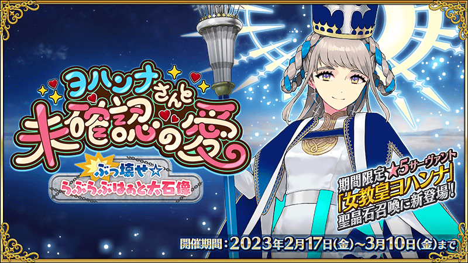
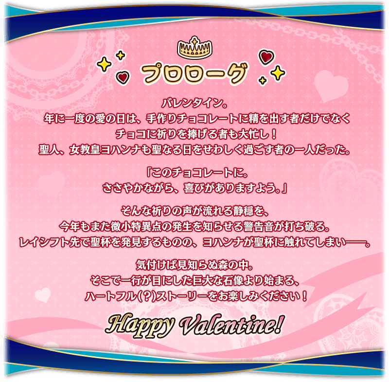
期間限定活動「與瓊安的未確認之愛 破壞吧☆LoveLove愛心大石像」決定開幕！
迦勒底一行人前往調查在情人節觀測到的微小特異點。
在聖杯爭奪戰中重建的特異點，傳遞愛意的巨大石像矗立在御主們的面前！
挑戰活動關卡收集「LoveLove愛心點數」，入手活動交換道具「鎖定巧克力」「驚喜巧克力」，收下來自從者的巧克力・回禮(概念禮裝)吧！
另外，本活動中，領取巧克力・回禮(概念禮裝)會發展出從者的特別訊息(附語音)！
並且，本活動中可賦予活動限定的特效技能「聖人的祝福 EX」的「祝福鎖定巧克力〔草莓〕」「祝福鎖定巧克力〔藍莓〕」也登場！
詳情請閱覽此處。
※本活動中，在每次領取巧克力・回禮(概念禮裝)時的文字冒險部份開始前都必須下載語音，會比以往增加資料流量。詳情請觀看此處的公告。 ※在2018年12月31日(二) 23:00以後新配信的主線故事及期間限定活動、一部份關卡、宣傳活動及召喚中，會顯示隱藏真名的對象從者真名。 ※本頁面皆為開發中圖片。會有與實際圖片相異的情況。 ※一部份的關卡為日後開放。
◆活動舉辦期間◆
2023年2月17日(五) 17:00～3月10日(五) 11:59
◆活動參加條件◆
滿足以下條件的御主才能參加
・通過「特異點F 炎上汙染都市 冬木」
※文字冒險部份包含第2部 第3章為止的一部份內容。
◆注意◆
本活動中會包含未遊玩範圍的一部份劇透。 參加前請注意以下事項。
・由於是相當於第2部 第3章之後的故事，會包含有關第2部 第3章為止內容的一部份劇透。 ・收下巧克力・回禮(概念禮裝)的事件中，有包含靈基封印對象從者的封印中內容的一部份劇透。
活動的遊玩方式
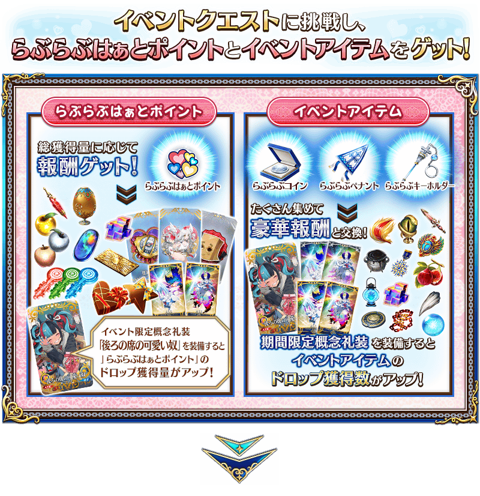 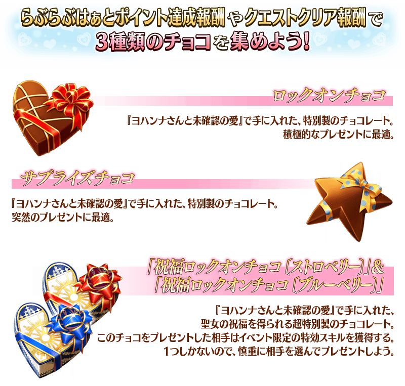
◆有關「祝福鎖定巧克力」的注意◆
「祝福鎖定巧克力」僅可入手「草莓」與「藍莓」各1個，合計2個。另外，「祝福鎖定巧克力」僅可在「收下巧克力」「送出巧克力」中分別使用1次，使用時敬請注意。
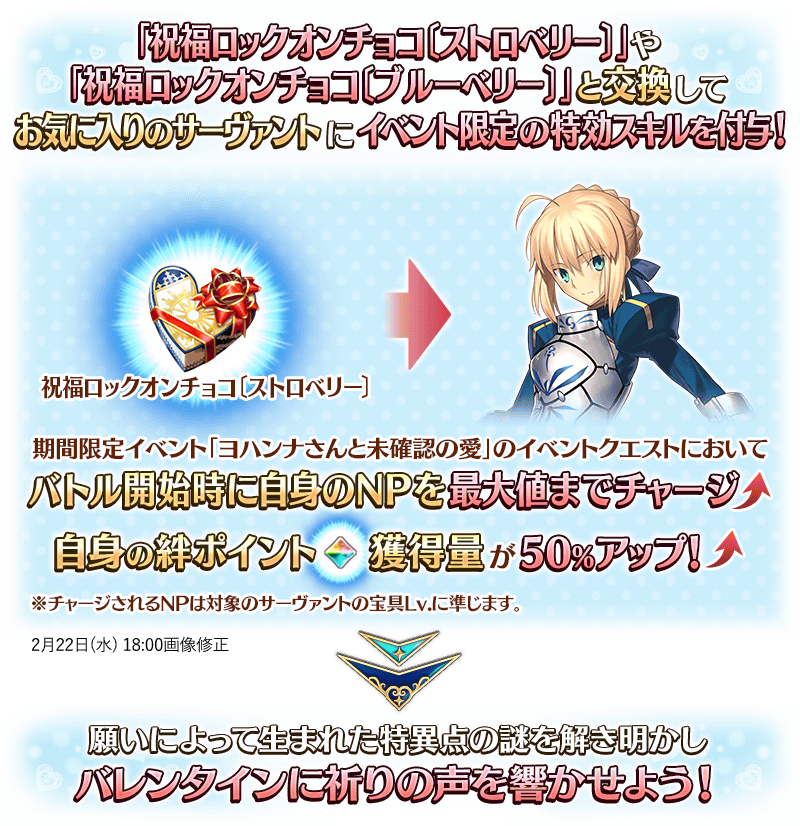
◆關於從「★5(SSR)女教皇瓊安」收下巧克力・回禮(概念禮裝)事件的注意◆
※想向「★5(SSR)女教皇瓊安」送出「鎖定巧克力」「驚喜巧克力」「祝福鎖定巧克力〔草莓〕」，必須通過期間限定活動「與瓊安的未確認之愛 破壞吧☆LoveLove愛心大石像」的主線關卡第七節。因此，2023年2月22日(三) 17:00以後才能領取巧克力・回禮(概念禮裝)及透過「祝福鎖定巧克力〔草莓〕」賦予特效技能。
◆關於從「★5(SSR)奧伯龍」領取巧克力・回禮(概念禮裝)時的注意◆
※想從「★5(SSR)奧伯龍」領取巧克力・回禮(概念禮裝)，必須通過第2部 第6章「Lostbelt No.6 妖精圓卓領域 阿瓦隆・勒・菲 星辰誕生之刻」。
※敬請注意未滿足從「★5(SSR)奧伯龍」領取巧克力・回禮(概念禮裝)條件的情況，送出巧克力時的文字冒險部份不會登錄到圖鑑(マテリアル)。
※敬請注意未滿足從「★5(SSR)奧伯龍」領取巧克力・回禮(概念禮裝)條件的情況，會返還「祝福鎖定巧克力〔藍莓〕」，不會賦予特效技能。
◆關於從瑪修・基利艾拉特收下禮物事件的注意◆
※通過本活動的序幕(プロローグ)的話，於「巧克力小姐的大驚小怪 -Valentine2016-」實裝從「瑪修・基利艾拉特」收下禮物時的事件，會以附語音登錄到個人空間(マイルーム)的「圖鑑(マテリアル)」內「與瓊安的未確認之愛 破壞吧☆LoveLove愛心大石像」。
※於達文西工房的「稀有稜鏡交換」獲得概念禮裝「カルデアスタンダード」也不會發生從瑪修・基利艾拉特收下禮物時的事件。
享受故事的主線關卡會逐日開放。
通過主線關卡第二節通過的話，會開放收集活動道具的自由關卡。
之後的自由關卡是藉由通過主線關卡來開放。
【關卡的舉辦期間】
| 關卡的種類 | 舉辦期間 |
|---|---|
|
序幕(プロローグ) 主線關卡第一節 主線關卡第二節 自由關卡 |
2023年2月17日(五) 17:00～ 3月10日(五) 11:59 |
|
主線關卡第三節 自由關卡 |
2023年2月18日(六) 17:00～ 3月10日(五) 11:59 |
|
主線關卡第四節 自由關卡 |
2023年2月19日(日) 17:00～ 3月10日(五) 11:59 |
|
主線關卡第五節 自由關卡 |
2023年2月20日(一) 17:00～ 3月10日(五) 11:59 |
|
主線關卡第六節 自由關卡 |
2023年2月21日(二) 17:00～ 3月10日(五) 11:59 |
|
主線關卡第七節 自由關卡 |
2023年2月22日(三) 17:00～ 3月10日(五) 11:59 |
做為「LoveLove愛心點數」達成報酬獲得的「鎖定巧克力」「驚喜巧克力」可在活動道具交換的「收下巧克力」「送出巧克力」中交換巧克力・回禮(概念禮裝)。
◆交換期間◆
2023年2月17日(五) 17:00～3月17日(五) 11:59
※「鎖定巧克力」及「驚喜巧克力」在活動舉辦期間結束後才能交換QP。
※活動道具交換期間結束後「鎖定巧克力」「驚喜巧克力」會消失。
巧克力・回禮(概念禮裝)的交換方法
在活動道具交換選擇「收下巧克力」或「送出巧克力」
在活動道具交換選擇「收下巧克力」主要是從女性從者收到巧克力・回禮(概念禮裝)，選擇「送出巧克力」則是從男性從者。
關於一部份的從者，會是「收下巧克力」「送出巧克力」雙方的對象，收到的禮物和事件內容各有差異。
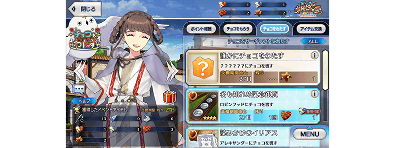
選擇與巧克力交換的禮物
從顯示的禮物之中任意選擇，選擇「從誰收下巧克力(送出巧克力給誰)」吧！
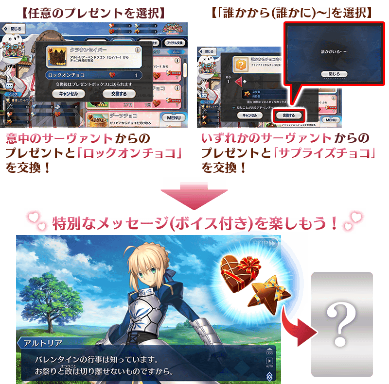
※「鎖定巧克力」與「驚喜巧克力」在交換禮物時的事件內容及可入手的概念禮裝沒有差異。 ※「收下巧克力」「送出巧克力」最多可一次交換10個為止。
◆關於從「★5(SSR)女教皇瓊安」收下巧克力・回禮(概念禮裝)事件的注意◆
※想向「★5(SSR)女教皇瓊安」送出「鎖定巧克力」「驚喜巧克力」「祝福鎖定巧克力〔草莓〕」，必須通過期間限定活動「與瓊安的未確認之愛 破壞吧☆LoveLove愛心大石像」的主線關卡第七節。因此，2023年2月22日(三) 17:00以後才能領取巧克力・回禮(概念禮裝)及透過「祝福鎖定巧克力〔草莓〕」賦予特效技能。
◆關於從「★5(SSR)奧伯龍」領取巧克力・回禮(概念禮裝)時的注意◆
※想從「★5(SSR)奧伯龍」領取巧克力・回禮(概念禮裝)，必須通過第2部 第6章「Lostbelt No.6 妖精圓卓領域 阿瓦隆・勒・菲 星辰誕生之刻」。
※敬請注意未滿足從「★5(SSR)奧伯龍」領取巧克力・回禮(概念禮裝)條件的情況，送出巧克力時的文字冒險部份不會登錄到圖鑑(マテリアル)。
※請注意可領取巧克力・回禮(概念禮裝)的從者，只限有召喚履歷的從者。沒有召喚履歷的者為對象外。 ※就算持有於2022年以前的活動入手的巧克力・回禮(概念禮裝)情況，還是可發生收下禮物的事件，即使是持有同樣的禮物也能持有不只一個。 ※一部份從者的特別訊息未對應全螢幕顯示。
在巧克力交換畫面中，追加可切換顯示未持有、已持有巧克力・回禮(概念禮裝)的篩選器
在情人節活動中的巧克力交換畫面，追加只顯示未持有的巧克力・回禮(概念禮裝)的篩選器與只顯示已持有的巧克力・回禮(概念禮裝)的篩選器。
點擊巧克力交換畫面右上的按鍵後，可切換「ALL」「未持有」「已持有」3種篩選器。
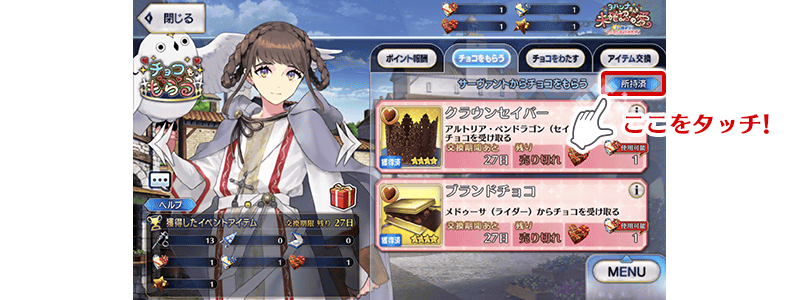

本活動中，新的巧克力「祝福鎖定巧克力〔草莓〕」與「祝福鎖定巧克力〔藍莓〕」登場。
「祝福鎖定巧克力〔草莓〕」或「祝福鎖定巧克力〔藍莓〕」交換成巧克力・回禮(概念禮裝)後，限在本活動期間中向送出巧克力的從者賦予活動限定的特效技能「聖人的祝福 EX」。
「祝福鎖定巧克力〔草莓〕」可使用在「收下巧克力」、「祝福鎖定巧克力〔藍莓〕」可使用在「送出巧克力」各1次。
◆交換期間◆
2023年2月17日(五) 17:00～3月17日(五) 11:59
※在活動結束後交換的情況，不會賦予活動限定的特效技能。
※活動道具交換期間結束後「祝福鎖定巧克力〔草莓〕」與「祝福鎖定巧克力〔藍莓〕」會消失。
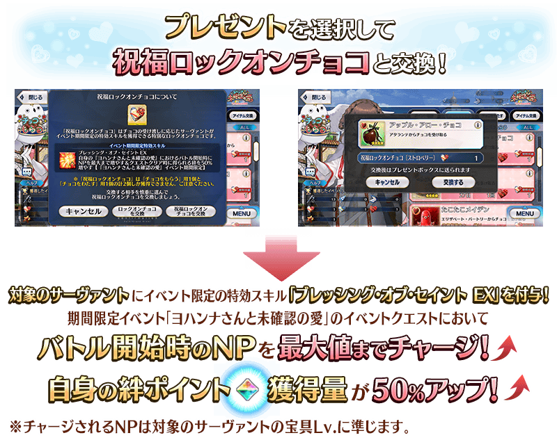 2月22日(三) 17:00圖片修正
◆有關「祝福鎖定巧克力」的注意◆
「祝福鎖定巧克力」僅可入手「草莓」與「藍莓」各1個，合計2個。另外，「祝福鎖定巧克力」僅可在「收下巧克力」「送出巧克力」中分別使用1次，使用時敬請注意。
◆關於從「★5(SSR)女教皇瓊安」收下巧克力・回禮(概念禮裝)事件的注意◆
※想向「★5(SSR)女教皇瓊安」送出「鎖定巧克力」「驚喜巧克力」「祝福鎖定巧克力〔草莓〕」，必須通過期間限定活動「與瓊安的未確認之愛 破壞吧☆LoveLove愛心大石像」的主線關卡第七節。因此，2023年2月22日(三) 17:00以後才能領取巧克力・回禮(概念禮裝)及透過「祝福鎖定巧克力〔草莓〕」賦予特效技能。
◆關於從「★5(SSR)奧伯龍」領取巧克力・回禮(概念禮裝)時的注意◆
※想從「★5(SSR)奧伯龍」領取巧克力・回禮(概念禮裝)，必須通過第2部 第6章「Lostbelt No.6 妖精圓卓領域 阿瓦隆・勒・菲 星辰誕生之刻」。
※敬請注意未滿足從「★5(SSR)奧伯龍」領取巧克力・回禮(概念禮裝)條件的情況，會返還「祝福鎖定巧克力〔藍莓〕」，不會賦予特效技能。
※請注意可領取巧克力・回禮(概念禮裝)的從者，只限有召喚履歷的從者。 ※就算已經送出「鎖定巧克力」「驚喜巧克力」 的從者，也可送出「祝福鎖定巧克力〔草莓〕」或「祝福鎖定巧克力〔藍莓〕」來賦予活動限定的特效技能「聖人的祝福 EX」。屆時，無法入手巧克力・回禮(概念禮裝)。 ※對無論「收下巧克力」與「送出巧克力」都能選擇的從者，只能送出「祝福鎖定巧克力〔草莓〕」或「祝福鎖定巧克力〔藍莓〕」其中一個。 ※於支援選擇畫面顯示的活動加成，會顯示其他御主向對象從者賦予活動限定的特效技能「聖人的祝福 EX」的情況。

配合「祝福茶會關卡」活動故事的展開，會開放在關卡出撃時使用後，絆點數的獲得量變成2倍的「占星茶壺」可做為關卡報酬獲得。
活用「占星茶壺」，在本活動與喜愛從者的羈絆更深吧！
※請注意只限於可獲得絆點數的關卡中獲得量變成2倍。 ※「祝福茶會關卡」的報酬只限在初次通過時才能領取。
◆道具使用期限◆
2023年2月17日(五) 17:00～3月10日(五) 22:59
※「占星茶壺」有使用期限，超過使用期限「占星茶壺」會消失，敬請注意。
「LoveLove愛心點數」的總獲得量到達一定量的話，可獲得達成報酬。
除了「鎖定巧克力」「驚喜巧克力」以外，還能獲得活動限定指令紋章等。
達成報酬可在點擊管理室(ターミナル)畫面右上的「活動報酬」鍵所顯示的「LoveLove愛心點數報酬」畫面確認
※「LoveLove愛心點數」的總獲得量是計算在活動關卡掉落所獲得的「LoveLove愛心點數」。
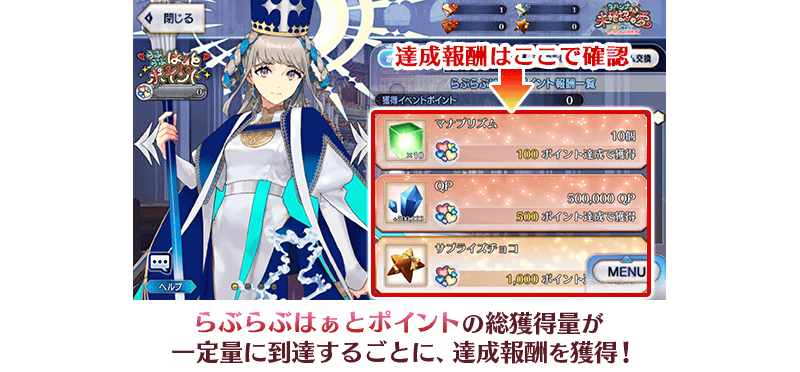
【2月24日(五) 17:00追記】
以通過期間限定活動「與瓊安的未確認之愛 破壞吧☆LoveLove愛心大石像」第七節及「終局特異點」的御主做為對象，開放高難易度的「挑戰關卡」。
「挑戰關卡」就算通過後也不會消失，可以變更從者和概念禮裝的組合等後無限次挑戰。
※關卡通過報酬、戰利品、御主EXP、魔術禮裝EXP、絆點數只可在初次通過時獲得。
◆挑戰關卡開放時間◆
2023年2月24日(五) 17:00～
◆挑戰關卡參加條件◆
滿足以下條件的御主才能參加
・通過期間限定活動「與瓊安的未確認之愛 破壞吧☆LoveLove愛心大石像」的第七節
・通過「終局特異點」
◆挑戰關卡初次通過報酬◆
傳承結晶 1個
超值攻略方法・其1
本活動的期間中，下表的從者在活動關卡中，會得到「自身的攻擊威力提升」與「絆點數獲得量提升」的加成！
強化對象從者，向活動挑戰吧！
※活動加成的效果量因從者而異。 ※透過「祝福鎖定巧克力」賦予的效果與在賦予表內從者的活動加成效果是以加算發揮。
【活動加成的效果量與對象從者】
| 自身的 攻擊威力 |
絆點數 獲得量 |
職階 | 稀有度 | 從者名 |
|---|---|---|---|---|
| ＋100% | 只限自身 ＋50% |
Ruler | ★★★★★ | 女教皇瓊安 |
| ＋50％ | 只限自身 ＋20% |
Saber | ★★★★★ | 尼祿・克勞狄烏斯〔Bride〕 |
| Archer | ★★★★★ | 清少納言 | ||
| Caster | ★★★★★ | 紫式部 | ||
| Assassin | ★★★★★ | 賽米拉米斯 | ||
| Berserker | ★★★★★ | 謎之女主角X〔Alter〕 | ||
| Ruler | ★★★★★ | 卡蓮・Ｃ・奧爾黛西亞(埃莫〔卡蓮〕) | ||
| Alterego | ★★★★★ | 瑪納諾・麥克・列〔巴婕特〕 |
※就算成為對象從者也會有未在本活動的主線劇本登場的情況。 ※埃莫〔卡蓮〕進行靈基再臨的話，卡面名稱會變成卡蓮・C・奧爾黛西亞。 ※自2月15日(三) 17:00，在從者選擇畫面和從者強化畫面等，追加活動加成篩選器。由於是只顯示於活動活躍從者的便利功能，敬請活用。
超值攻略方法・其2
【2月17日(五) 17:00追記】
裝備活動限定概念禮裝讓「LoveLove愛心點數」的掉落獲得量提升！
裝備可靠活動道具交換與「LoveLove愛心點數」達成報酬入手的活動限定概念禮裝「★5(SSR)後ろの席の可愛い奴」的話，「LoveLove愛心點數」的掉落獲得量會提升。
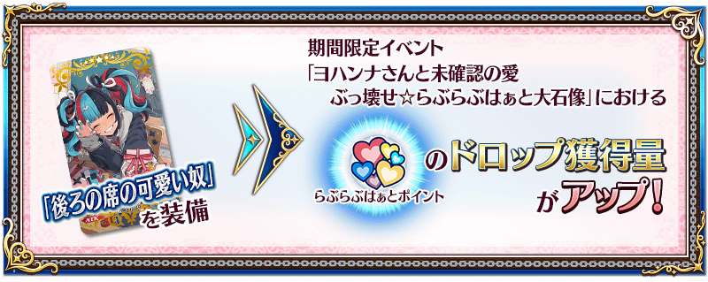
另外，裝備自從者收下「巧克力・回禮(概念禮裝)」的概念禮裝的話，「LoveLove愛心點數」的掉落獲得量會提升！
【巧克力・回禮(概念禮裝)】
超值攻略方法・其3
【2月17日(五) 17:00追記】
裝備期間限定概念禮裝讓活動道具的掉落獲得數提升！
裝備在與本活動同時舉辦的聖晶石召喚Pick Up的期間限定概念禮裝「★5(SSR)ウィンズ・オブ・スプリング」「★4(SR)ラブ・ディリュージョン」「★3(R)スリーピング・エリザ」的話，活動道具「LoveLove硬幣」「LoveLove尖旗」「LoveLove鑰匙圈」各自的掉落獲得數會提升。
※請注意各關卡的道具掉落率並非100％。
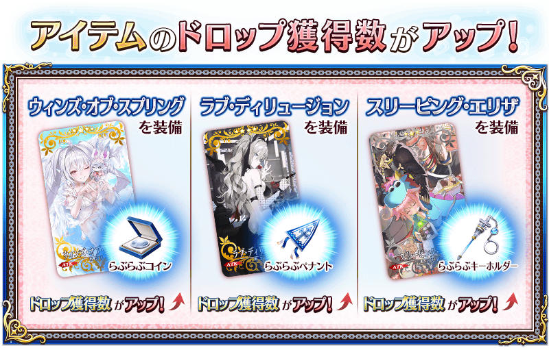

【2月17日(五) 17:00追記】
| 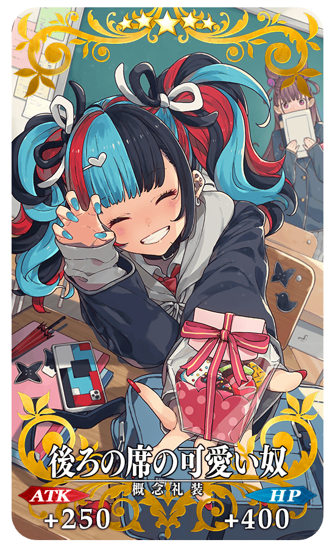 |
★★★★★SSR
◆最大解放時效果◆
|
【2月17日(五) 17:00追記】
|
【活動限定】 |
| 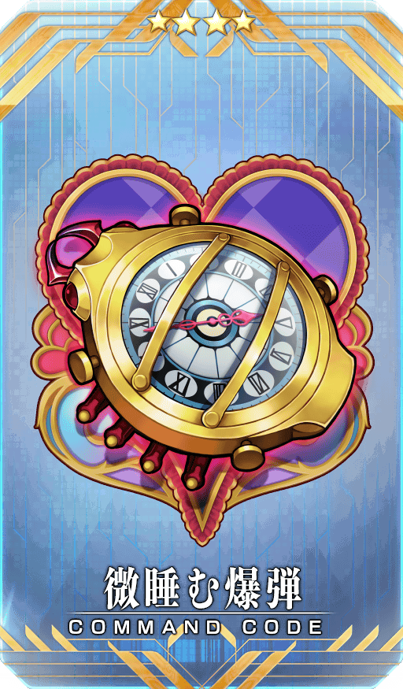 |
★★★★SR |
|
★★★R |
活動道具可自點擊管理室(ターミナル)畫面右上「活動報酬」鍵所顯示的「活動道具交換」畫面，交換以下的道具。
※關於傳承結晶、英靈結晶・流星之芙芙ALL★4(HP)、英靈結晶・日輪之芙芙ALL★4(ATK)，在通過本活動的主線關卡後才能交換。 ※「鎖定巧克力」「驚喜巧克力」「祝福鎖定巧克力〔草莓〕」「祝福鎖定巧克力〔藍莓〕」在活動期間結束後可交換成QP。 ※活動道具交換期間結束後「LoveLove硬幣」「LoveLove尖旗」「LoveLove鑰匙圈」「鎖定巧克力」「驚喜巧克力」「祝福鎖定巧克力〔草莓〕」「祝福鎖定巧克力〔藍莓〕」會消失。
◆交換期間◆
2023年2月17日(五) 17:00～3月17日(五) 11:59
◆能用LoveLove硬幣交換的道具◆
|
【活動限定概念禮裝】 【技能強化＆靈基再臨素材】 【靈基再臨素材】 【其他道具】 |
◆能用LoveLove尖旗交換的道具◆
|
【活動限定概念禮裝】 【技能強化＆靈基再臨素材】 【靈基再臨素材】 【其他道具】 |
◆能用LoveLove鑰匙圈交換的道具◆
|
【活動限定概念禮裝】 【技能強化＆靈基再臨素材】 【其他道具】 |
◆能用「鎖定巧克力」「驚喜巧克力」「祝福鎖定巧克力〔草莓〕」「祝福鎖定巧克力〔藍莓〕」交換的道具◆
|
【其他道具】 |
為了記念期間限定活動「與瓊安的未確認之愛 破壞吧☆LoveLove愛心大石像」的開幕，在達文西工房的「魔力稜鏡交換」，永久追加情人節2022的指令紋章「★3(R)バディ・リング〔GOLD〕」。
就算已經持有對象指令紋章的情況，也可於「魔力稜鏡交換」獲得。
◆追加時間◆
2023年2月17日(五) 17:00～
◆在「魔力稜鏡交換」追加的指令紋章◆
| 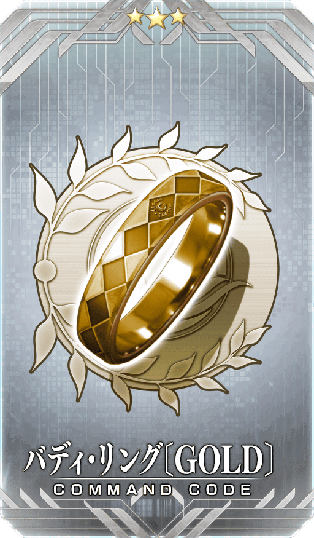 |
★★★R |
◆追加道具(永久)◆
| 追加道具 | 能交換次數 | 1次交換所需的 魔力稜鏡數 |
|---|---|---|
| ★3(R)バディ・リング〔GOLD〕 | 1次 | 300個 |
※在「魔力稜鏡交換」追加的指令紋章「★3(R)バディ・リング〔GOLD〕」為永久，沒有交換期限。
【2月20日(一) 17:00追記】
可在達文西工房的「靈衣縫製」交換的「★5(SSR)卡蓮・Ｃ・奧爾黛西亞(埃莫〔卡蓮〕)」的簡易靈衣「惡魔卡蓮」開放權，通過「終局特異點」後變得可免費交換！
◆靈衣開放權交換免費化的時間◆
2023年2月20日(一) 17:00～
※簡易靈衣「惡魔卡蓮」開放權的交換免費化沒有期限。
◆靈衣開放權交換免費化的條件◆
滿足以下條件的御主才能免費交換
・通過「終局特異點」
※關於已經取得交換對象靈衣開放權的玩家，無法交換。 ※已經用稀有稜鏡交換過的情況，會在滿足免費開放條件的時間點返還「交換使用的同數量稀有稜鏡」到禮物箱。
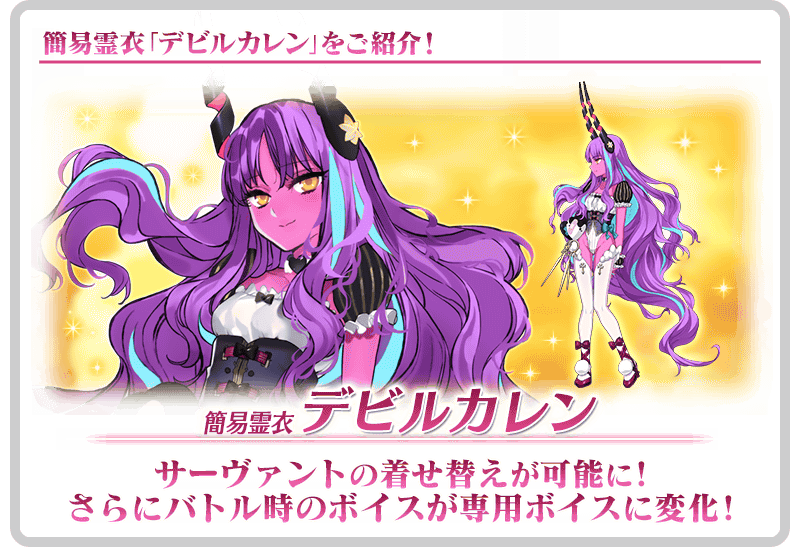
【2月24日(五) 17:00追記】
可在達文西工房的「稀有稜鏡交換」開放的「謎之女主角X〔Alter〕體驗關卡」，通過「終局特異點」後變得可免費開放！
可迎接「★5(SSR)謎之女主角X〔Alter〕」做為支援成員，挑戰關卡！
請試著體驗對象從者的技能和寶具！
※已經用「稀有稜鏡交換」交換的情況，會在滿足免費開放條件的時間點返還「交換使用的同數量稀有稜鏡」到禮物箱。
◆免費開放時間◆
2023年2月24日(五) 17:00～
※「謎之女主角X〔Alter〕體驗關卡」關卡開放權的免費開放沒有期限。
◆免費開放條件◆
滿足以下條件的御主才能免費交換
・通過「終局特異點」
◆關卡通過報酬◆
狂之輝石 3個
狂之魔石 2個
狂之秘石 1個
在期間限定活動「與瓊安的未確認之愛 破壞吧☆LoveLove愛心大石像」的特設頁面，智慧型手機用桌面的贈送實施中！
在社群媒體分享特設頁面就能下載，請務必使用。
◆配發期間◆
2023年2月16日(四) 17:00～3月10日(五) 11:59
◆特設頁面◆
https://www.fate-go.jp/special/2023-valentine/
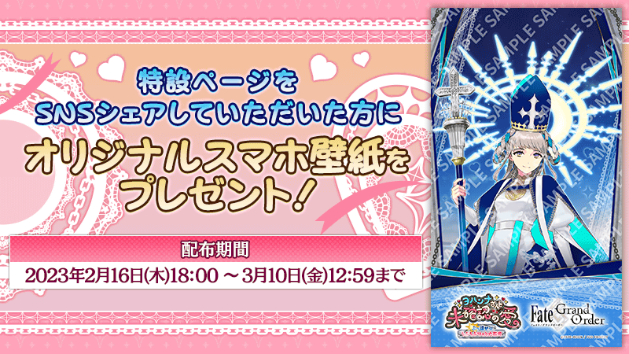
【2月17日(五) 17:00追記】
在2023年2月17日(五)的維修後反映的更新內容之中，介紹代表性的內容。
◆追加時間◆
2023年2月17日(五) 17:00～
在情人節活動中追加容易找到每位從者的個別劇本的功能
從「於活動關卡的記錄」情人節活動中閲覧從者個別的劇本時，於從者的外觀圖片追加可檢索的「一覧」顯示及篩選器功能。
從「巧克力領取」「巧克力回禮領取」內上部的標籤切換「清單」「一覧」來變更顯示方法。
另外，點擊同畫面的「篩選器」後，也追加可用各式各樣項目來檢索目標劇本的篩選器功能。
請在情人節活動中檢索從者個別的劇本上善加使用。
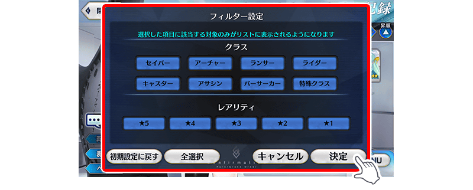
【2月19日(日) 17:00追記】
其他還有期間限定「情人節2023Pick Up召喚」等的情報公開中！
關於詳情，請自下述橫幅確認。